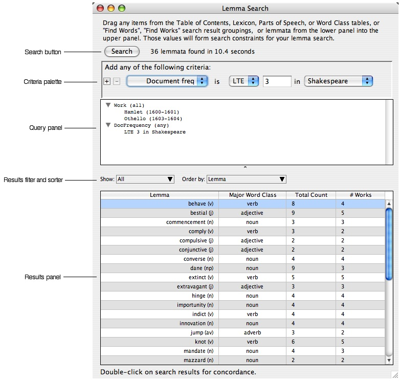
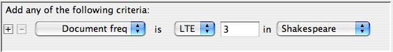
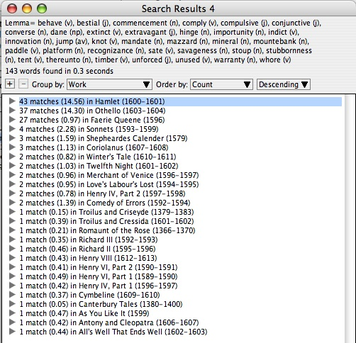

|
|
|
In Searching for Words we described how to search for words by specifying various criteria. "Find Lemmata" works similarly but is different in the following ways:
The "Find Lemmata" command is found in the "Find" menu (Command-Y). Its window consists of five parts:
The "Search" button at the top is used to execute a search once you've assembled the desired criteria.
The Criteria popup is like that found in Searching for Words. The difference is that here you select the desired criteria from the popup list, enter or select its value, and then lastly hit the plus sign to add it to the query. This will add the criterion to the query panel below, grouping like criteria together. In this way as many values for a criterion can be entered as desired. Criteria can be deleted from the query panel by selecting them and hitting the delete key. Multiple query panels may be opened at one time and criteria dragged and dropped between them.
The Query panel is where you build a query by accumulating search criteria. In addition to adding criteria with the Criteria popup, you can add criteria by dragging items from other windows in the application. As we've seen, the concordance window can group results by several criteria. These groupings can be dragged into the query panel to form search criteria. For example, you might group your concordance by Publication Date, decide some of those date ranges are of interest, and drag them into the query panel. Those date ranges then become criteria limiting search results to lemmata published within them. Criteria can similarly be added by dragging items from the Lexicon windows, the Parts of Speech and Word Class windows, the Table of Contents window, and from analysis results produced by the Calculator.
The Result filter and sorter operate as in the Lexicon windows. To filter search results to show only the ones for a particular major word class, use the "Show" popup menu. To specify an ordering for the search results, use the "Order by" popup menu.
The Results panel operates like the Lexicon windows displaying lemmata with major word class, total count in all corpora, and document frequency. Double-clicking items in the panel will invoke the concordance window for the selected lemmata. As we've already seen, the concordance window displays each word occurrence in context and allows us to group results by a variety of criteria. Multiple selection is supported, so we can view as many or as few lemmata in context as needed.
The query logic is as follows: values for most criteria are "ORed" together. That is, if any of the values for the criterion are true for a lemma, that criterion is true for the lemma. Some criteria allow you to change how their values are combined. "Work", "Document Frequency", and "Collection Frequency" allow you to toggle that rule between any, all, and none. Any indicates the criterion is true for a lemma if it is true for any of the items in the list. All indicates that the criterion is true for a lemma if it is true for all the items in the list. None means that only lemmata for which none of the values of the criterion are true will satisfy that criterion. You can toggle between these various combination rules for a criterion by clicking on its name while holding down the control key. Different criteria are then "ANDed" together. That is, the different criteria in a query must all be true for a lemma to match. In the example below we will find lemmata satisfying two criteria: 1) They are found in both Hamlet and Othello, 2) they are found in fewer than four Shakespeare works.

Example 1. Find lemmata common to Hamlet and Othello but rare in the rest of Shakespeare.
We drag Hamlet and Othello from the Table of Contents window into the query panel of the Lemma Search window. They group together as Work criteria. We "control-click" on Work to toggle between any, all, and none. We select all because the lemmata we're looking for must be found in both Hamlet and Othello.
Since we're interested in words that are rare elsewhere in Shakespeare, we want to add a document frequency constraint.

We next select "Document freq" from the popup list of available criteria and set its value to "less than or equal to 3 in Shakespeare". This means we want lemmata that are found in no more than 3 works in Shakespeare. We could have set this equal to 2, which would give us only lemmata that are found in both Hamlet and Othello. By setting the constraint a little greater than the number of works we've explicitly indicated, we relax it enough to find words that meet the general criteria of "rare elsewhere", but open the door to other works that cluster around words common to Hamlet and Othello.
With this search we find 36 lemmata. To take a closer look at how and where these are used, we invoke the concordance window. We do so by double-clicking on any lemmata in the result set. Multiple selection is supported, so we can view as many or as few as we like. When we sort by count, we see that all the lemmata except therewith and pole are very low frequency words (less than 10 counts each). Since the remaining are of low frequency, there is nothing to discourage us from viewing them all. We select all lemmata except therewith and pole and double-click to open them in the concordance window.

Results of a lemma search can be saved in a Word Set for further analysis in the Calculator. You will need an account on a WordHoard server to do this. Logged in users can use the "Save as Word Set..." item in the File menu to create a Word Set from Lemma Search criteria.
|
|
|